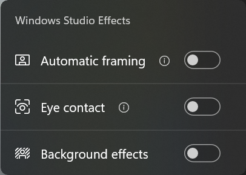
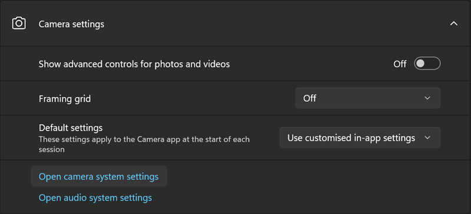

Windows Studio Effects¶
Goal¶
Demonstrate the NPU in action using the Windows Studio Effects
References¶
Introduction to Windows Studio Effects¶
Microsoft’s Windows Studio Effects (WSE) uses Ryzen AI for energy-efficient acceleration of AI enhanced features for video conferencing.
[1]:
from IPython.display import IFrame
IFrame('https://www.youtube.com/embed/xzUOhkqAItM', width=560, height=315)
[1]:
WSE Features¶
WSE features are available exclusively on systems equipped with dedicated AI hardware. Features available at launch include:
intelligent background blur to hide your background and avoid distractions
eye contact correction creates the impression that you are looking at the camera, improving your engagement and connection with your audience
automatic framing dynamically adjust the camera view, ensuring that you remain centered and perfectly positioned within the frame
Voice Focus filters out background noise and boosts your audio to give you and your participants a higher quality call experience
Try Windows Studio Effects Now¶
Windows Studio Effects requires a processor with the Ryzen AI NPU and a supported webcam
Windows Studio Effects settings¶
Discover what Ryzen AI can do by trying Windows Studio Effects, which is pre-installed on the laptop you are using!
Steps¶
Open the Camera application on your Windows 11 laptop.
Make sure the Camera application is set to Take Video for your built-in webcam.
The WSE icon should be visible on the top right corner
Click the Windows Studio Effects icon to open the settings, and try turning on and off the different features.

Camera App Windows Studio Effects
Automatic framing - With automatic framing enabled try moving around your room and notice how the camera view will pan and zoom to keep you in the center.
Background blur - With background blur enabled, try the Standard and Portrait effects. Try it with two people in the room. The effect will keep you both in focus.
Eye contact - Try looking at the bottom of your screen while turning on and off this effect. It will apply a correction to your eyes to make it appear that you are looking directly at the camera and making eye contact with your audience. This effect can be more subtle than the others and harder to notice.
All these functions are running on the Ryzen AI NPU. This means your main CPU is free for other tasks, improving the speed and responsiveness of your laptop. Ryzen AI uses less power for these functions which increases your battery life. Ryzen AI is the only x86 CPU with an NPU. It is the only way to use Windows Studio Effects on your Windows 11 laptop.
System-wide Settings¶
You can enable these features system wide. These means the effects can be enabled for any application that uses your camera.
Opening the camera system settings. Click the cog in the top left corner and then select open camera system settings.

Camera settings
In the camera system settings, you will be able to configure the camera effects that apply to the system. If any of the effects is enabled here, it will apply to all the apps using the camera e.g., Teams.

System wide Windows Studio Effects settings
Next steps¶
Continue to section 3 to learn more about the Ryzen AI NPU architecture, with example applications you can run on your Ryzen AI laptop.
Copyright© 2023 AMD, Inc
SPDX-License-Identifier: MIT